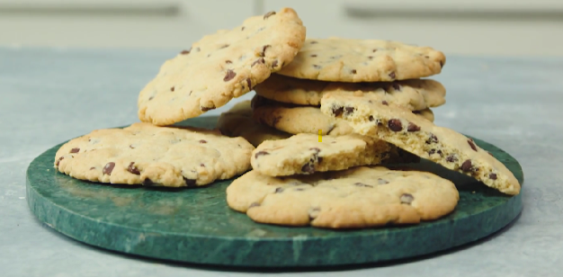

Navigatie
Hoofdpagina
Appeltaart

| Hoeveelheid |
Ingrediënt |
| 1 |
Middelgroot scharrelei |
| 1 |
Citroen |
| 400 gram |
Zelfrijzend bakmeel |
| 250 gram |
Witte basterdsuiker |
| 1 mespunt |
Zout |
| 250 gram |
Ongezouten roomboter |
| 8 |
Goudrenet-appels |
| 2 tl |
Kaneel |
| 150 gram |
Amandelspijs |
| 2 el |
Abrikozenjam |
- Klop de zachte boter met de basterdsuiker en de kristalsuiker met de handmixer tot het goed gemengd is. Dit duurt ca. 30 sec. Voeg het ei toe en klop tot een glad mengsel. Dit duurt ook ca. 30 sec. Zeef de bloem en spatel samen met het zout en de baking soda door het botermengsel.
- Voeg de chocolade druppels toe. Kneed kort door. Pak in vershoudfolie en laat minimaal 1 uur rusten in de koelkast.
- Verwarm de oven voor op 180 °C. Bekleed een bakplaat met bakpapier. Verdeel het deeg in 8 balletjes en leg de deegballetjes met voldoende tussenruimte op de bakplaat. Druk ze met je vingers slordig plat tot een koekje van Ø 10 cm.
- Bak in 10 min. gaar worden in de oven. Laat ze niet te bruin worden, dan zijn ze niet meer chewy. Haal met bakpapier en al van de bakplaat en laat afkoelen op het aanrecht.